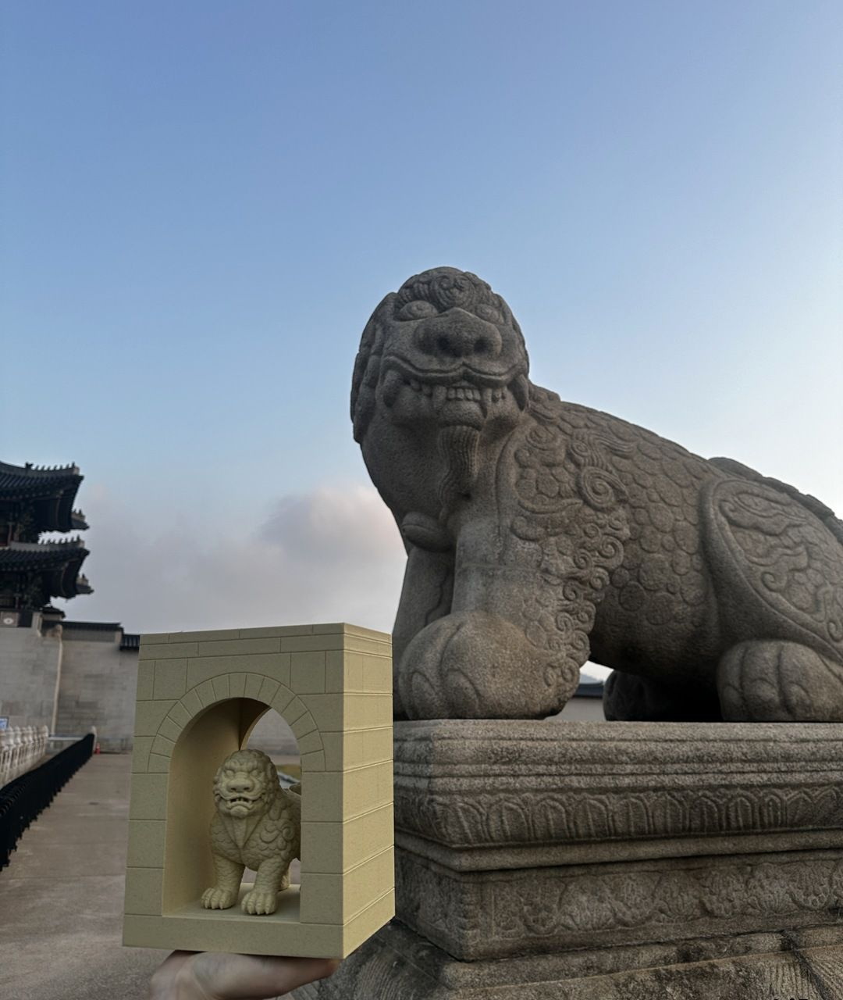
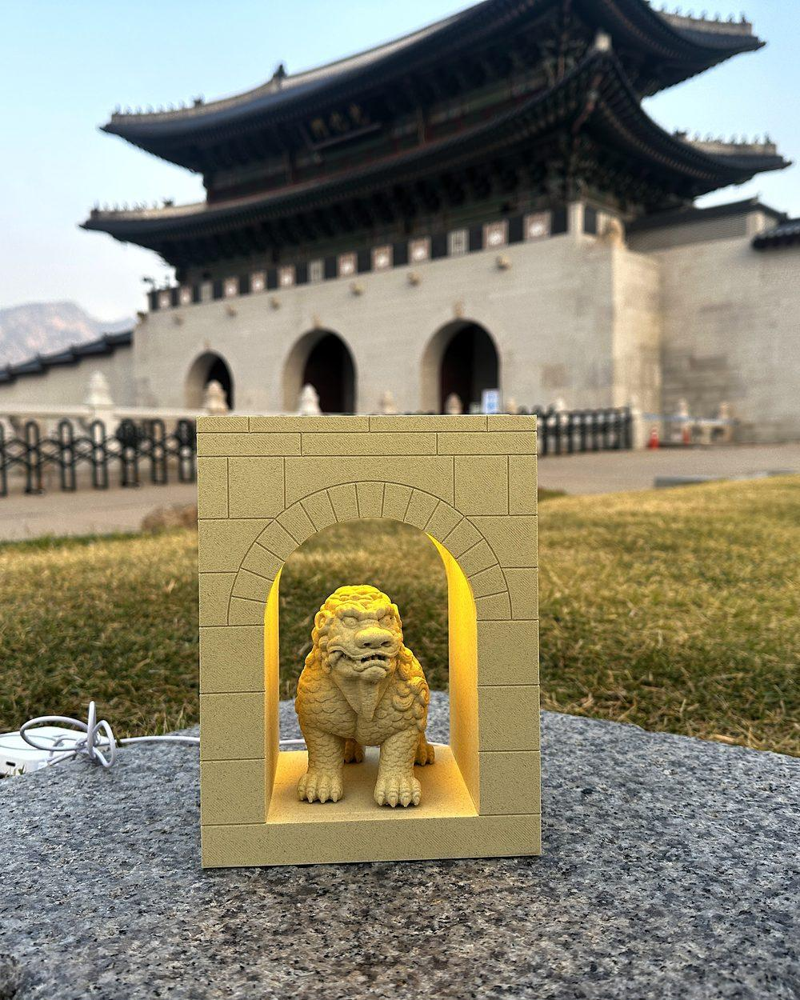
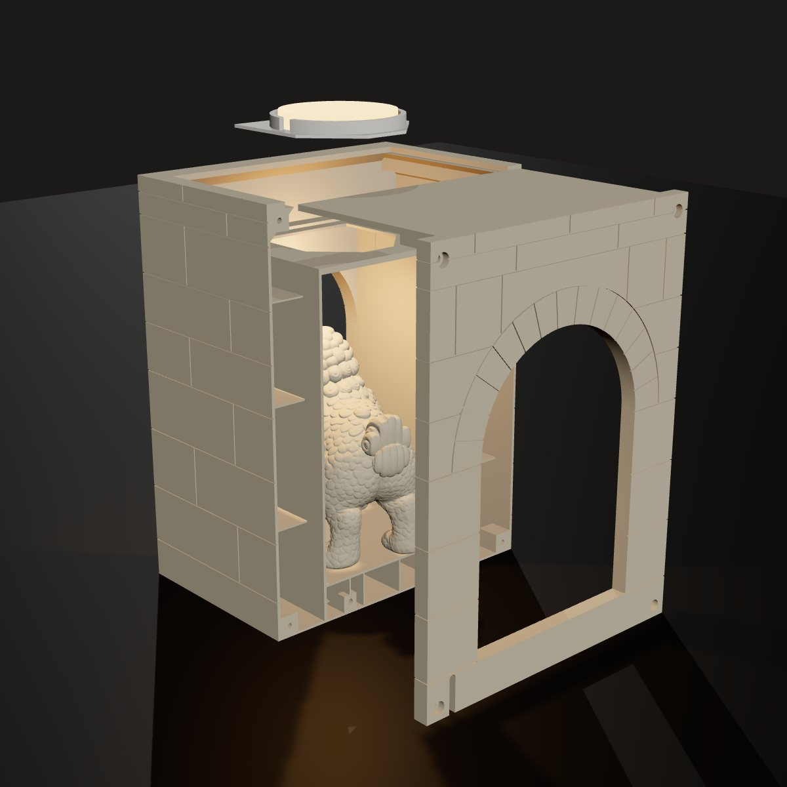
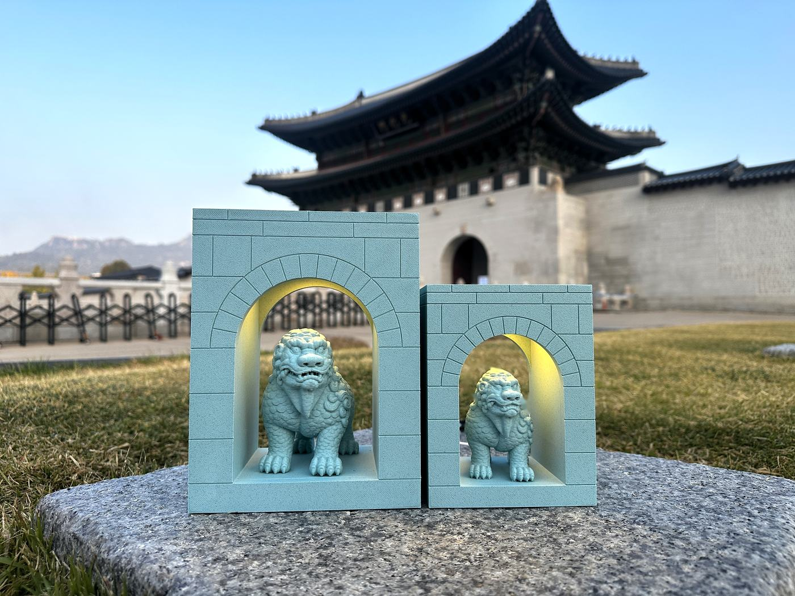
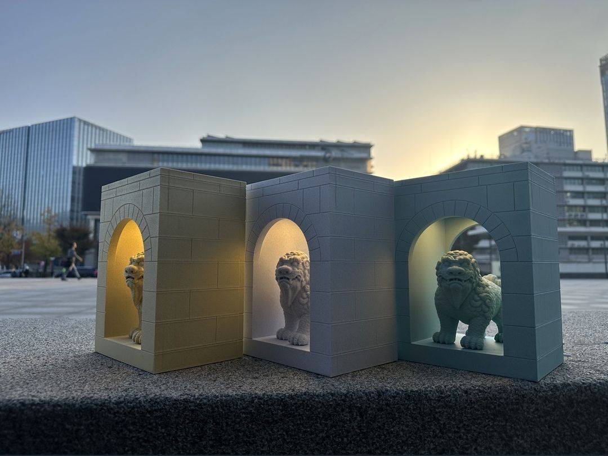

01 — FORM
홍예문을 읽다
실제 광화문 사진에서 비례를 가져왔습니다. 홍예석은 15개, 아치 띠 두께는 문 반지름의 0.34배, 이맛돌도 띠와 같은 높이로 맞췄습니다. 해치는 출력할 때 입 안에 서포트가 서지 않도록 입 안쪽을 얕게 메웠습니다.


광화문의 홍예문과 그 앞을 지키는 해치를 책상 위 라이트박스로 옮겼습니다. 문 안쪽 천장에 LED를 숨겨, 밤이 되면 홍예문 안에서 해치가 빛을 받고 서 있도록 했습니다. 형태 해석, 조립 구조 설계, 출력 파일까지 한 사람이 진행했습니다.
실제 광화문 사진에서 비례를 가져왔습니다. 홍예석은 15개, 아치 띠 두께는 문 반지름의 0.34배, 이맛돌도 띠와 같은 높이로 맞췄습니다. 해치는 출력할 때 입 안에 서포트가 서지 않도록 입 안쪽을 얕게 메웠습니다.


뒷판과 윗면 덮개를 ㄱ자 한 부품으로 합쳤습니다. 뒤에서 밀어 넣어 정렬 핀 2개에 맞추고 나사 4개로 조입니다. 윗판 밑 누름살 두 줄이 LED 위 0.5 mm에 와서, 뒤집거나 택배로 흔들려도 LED와 홀더가 뜨지 않습니다. LED는 나사를 풀고 뒷판을 빼면 바꿀 수 있습니다.
분해 그림은 실제 출력 모델(V9)로 만든 3D 렌더입니다.

V9까지 출력과 수정을 반복했습니다. 첫 출력에서 바닥이 부풀어 바닥 속을 비우고 리브로 묶었고, 옆벽이 눌려 한 장으로 붙였습니다. 몸통의 서포트를 없애 한 세트 출력 시간을 45분 줄였고, 홍예석을 실제 비율로 다시 나눴습니다. 같은 구조로 75% 크기의 M도 만들었습니다.

문 안쪽 천장에 숨긴 USB 원형 LED가 아치 안쪽 벽과 해치를 비춥니다. LED는 홀더에 얹고 ㄱ자 뒷판의 누름살로 잡아, 정면에서는 빛만 보입니다.

Contact:
제품 디자인과 샘플 제작을 맡습니다. 스케치 한 장으로 시작할 수 있습니다.
의뢰 메일 쓰기